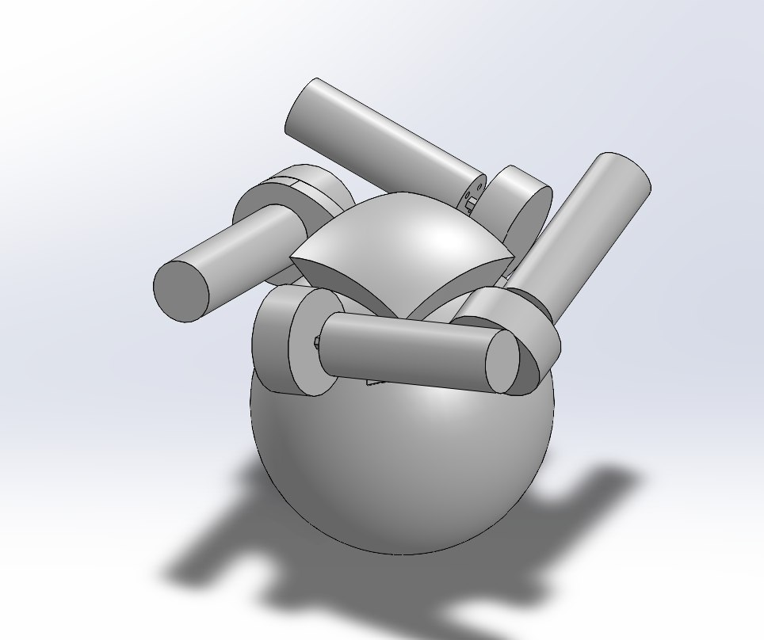
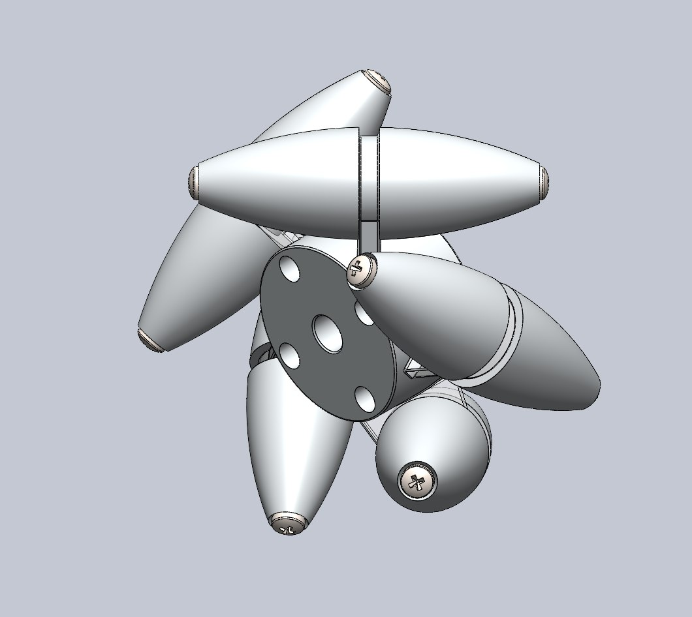
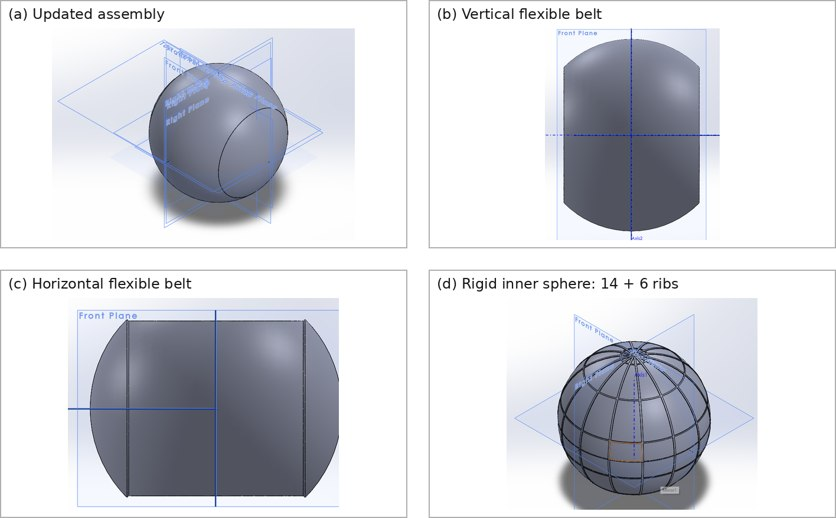
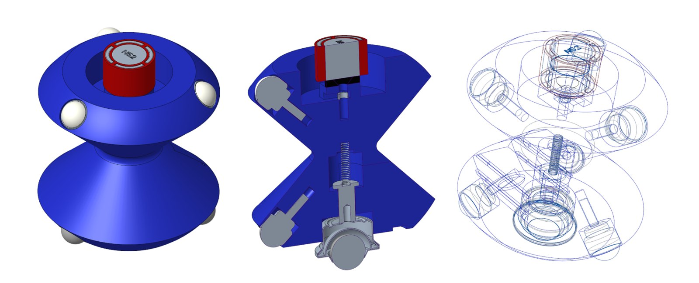
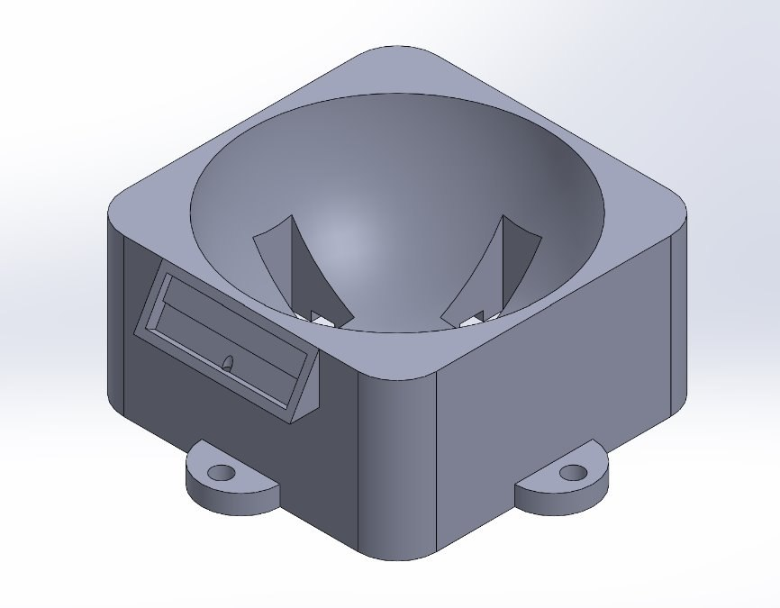

Five subsystems. One drive.
CAD models and engineering details of the five major subsystems.
Subsystems engineered as one assembly
The system integrates five coordinated subsystems: the yoke, Mecanum wheels, spherical wheel, internal support structure, and electrical controls with testing equipment.
Yoke & metal coupling plate
The curved external yoke provides support for motors and Mecanum drive wheels around the upper hemisphere. A centrally mounted metal plate is intended to couple magnetically to the sphere's internal magnet array, replacing magnets on the external yoke.
The current CAD work uses a 7-inch reference sphere and 70° Mecanum wheel orientation. Geometry and clearances remain subject to refinement.

Mecanum drive wheel
The current 2.5-inch wheel has five barrel-shaped rollers spaced 72° apart and oriented at 70° relative to the motor shaft. The CAD design includes a hub with a four-hole adapter pattern, roller supports, and fasteners.
The barrel geometry is intended to maintain smoother contact against the curved spherical surface. Screw and bearing loads remain important design considerations.

Snap-fit spherical wheel
The sphere uses a rigid Clear V5 resin inner shell assembled from two snap-fit halves. Fourteen vertical ribs and six horizontal ribs support the interface to two perpendicular Flexible 80A V2 resin belts.
Current design dimensions include a 0.10-inch rigid shell and 0.14-inch nominal flexible belt thickness. Belt overlap geometry and molding tolerances still require evaluation.

Internal support & magnetic coupling
Ball transfers are used to reduce friction against the interior of the sphere. The design incorporates metal lower transfers, nylon upper transfers, and spring-loaded contacts for stable positioning and controlled contact.
Permanent magnets are positioned within the sphere and couple to the yoke's metal plate. The design seeks stiffness, low friction, rotational freedom, and ease of assembly.

Electronics & dynamometer
The electrical subsystem includes drive motors, motor drivers, a microcontroller, receiver, encoders, power components, and protective circuitry. Existing hardware is being considered for reuse where practical.
An omni-directional dynamometer is being developed to test drive performance in two axes. The initial CAD concept fits a 7-inch sphere; a more universal fixture is planned.
